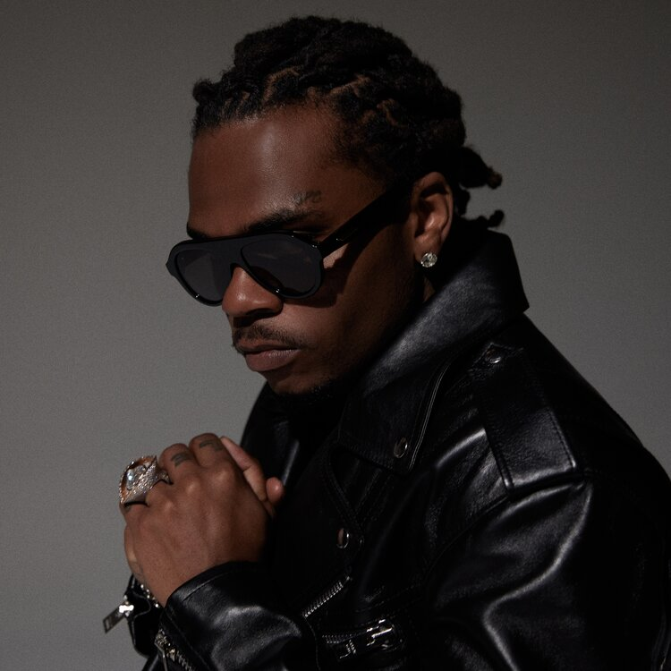

Este álbum marcou a ascensão de Gunna na cena hip-hop, com faixas que combinam o estilo melódico e a atmosfera do trap. Hits como "One Call" e "Speed It Up" são exemplos da sua habilidade para criar músicas cativantes.
Com este álbum, Gunna alcançou o primeiro lugar nas tabelas da Billboard. "Wunna" apresenta uma vibe descontraída, explorando temas de sucesso, luxo e autoconfiança. Faixas como "Dollaz On My Head" e "Skybox" foram muito bem recebidas pelos fãs e críticos.
DS4Ever é uma continuação da série Drip Season e mostra o amadurecimento artístico de Gunna. O álbum inclui colaborações de peso e produções elaboradas, destacando-se músicas como "Pushin P" (com Future) e "P Power" (com Drake).
O projeto de estreia de Gunna, que ajudou a solidificar sua base de fãs no mundo do rap. A mixtape apresenta suas primeiras colaborações com artistas da YSL (Young Stoner Life Records), incluindo Young Thug.
A terceira edição da série "Drip Season" consolidou ainda mais a posição de Gunna no cenário do hip-hop. Com faixas como "Sold Out Dates" (com Lil Baby), o álbum marcou a sua ascensão no mainstream.
A edição deluxe de "Wunna" adiciona faixas extras e oferece uma versão expandida do álbum que foi um sucesso nas paradas. Ele inclui colaborações com artistas como Lil Uzi Vert e Travis Scott.